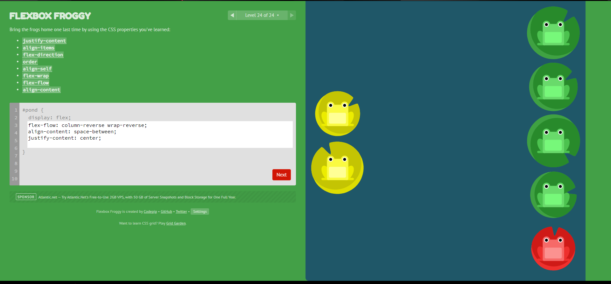
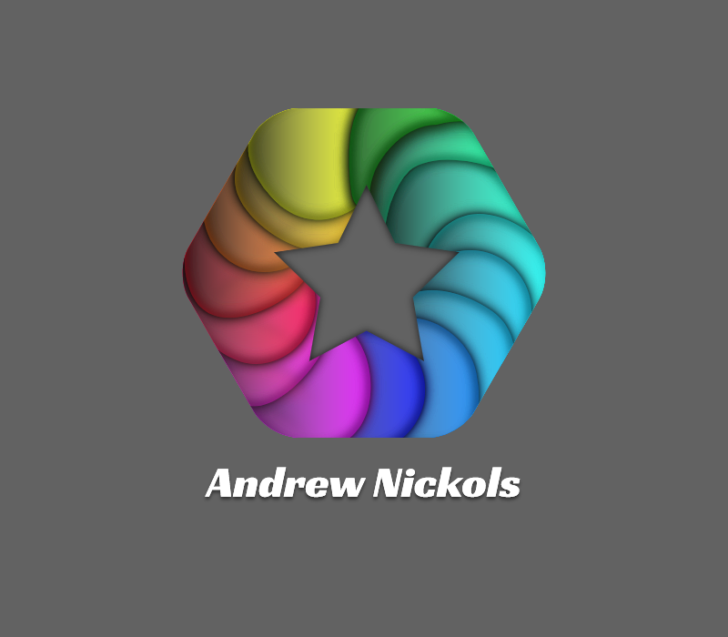

All Assignments
Image assigments
 Writing assigments
Progressive Enhancement
Progressive Enhancement is the concept of building a website from the content up. All sites need content, and ultimately that is why sites are visited. Thus when making a website, starting with the basic content as a foundation is a natural mindset. Progressive Enhancement is to take the content of your website and format it in a basic form through html. From there, you would then add css to give it design and beautification. Finally, you would add special effects and functionality through javascript. The premise is that if a user can't use javascript, they still get css and html. If they can't use javascript or css, they still get html.